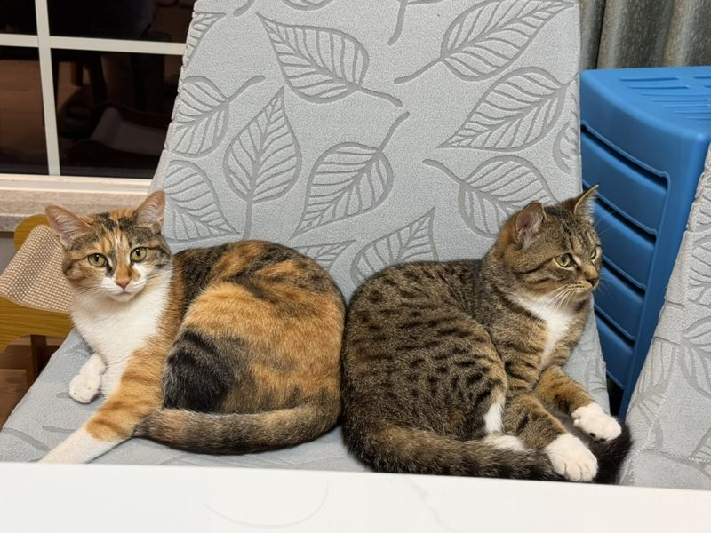
生物信息学博士 | 联合博士后研究员，任职于 欧洲分子生物学实验室（EMBL） 与 德国癌症研究中心（DKFZ） 📧 ziwei.xue@embl.de
个人简历： 点击查看
我目前在德国海德堡的 欧洲分子生物学实验室（EMBL） 与 德国癌症研究中心（DKFZ） 担任联合博士后研究员。此前，我在 浙江大学爱丁堡大学联合学院（ZJU-UoE）获得生物信息学博士学位。我的研究兴趣是多组学数据分析，重点开发机器学习和深度学习方法，以深入理解癌症及自身免疫性疾病中免疫细胞的表型多样性。我致力于整合不断增长、日益多样化的高通量测序数据，涵盖基因组学、转录组学、蛋白质组学和免疫组学等模态，以及群体、单细胞和空间等尺度，从而全面解析疾病背景下免疫系统的动态变化。
博士后研究员, EMBL
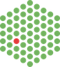
由 Alliance Interinstitutional Postdoc Program 支持
生物信息学博士，浙江大学爱丁堡大学联合学院 , 浙江大学，中国海宁
学士 ，生物医学专业，浙江大学爱丁堡大学联合学院 , 浙江大学，中国海宁
深圳中学
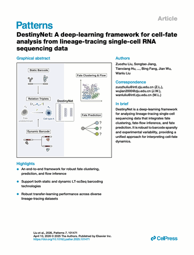
Liu, Z.*, Jiang, S.*, Hu, T.*, Xue, Z.*, Chen, Y., Ruan, D., Xia, H., Feng, Y., Hao, J., Li, W., Zhou, T., Fang, B., Wu, J., Liu, W.# (2025) Patterns, 7, 101471.
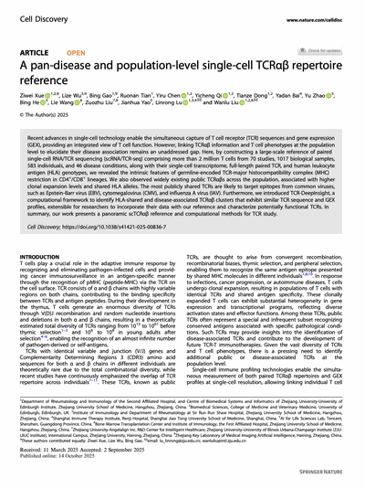
Xue, Z., Wu, L., Gao, B., Tian, R., Chen, Y., Qi, Y., Dong, T., Bai, Y., Zhao, Y., He, B., Wang, L., Liu, Z., Yao, J., Lu, L.#, Liu, W.# (2025) Cell Discovery, 11, 82.
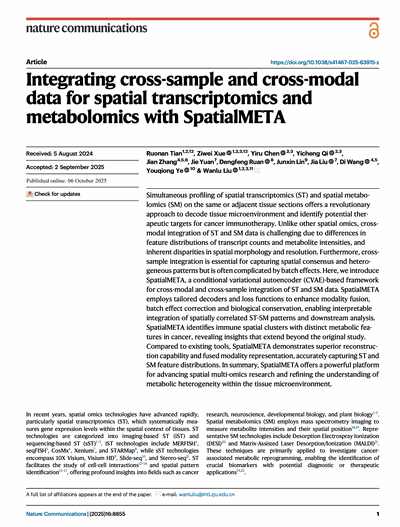
Tian, R., Xue, Z., Chen, Y., Qi, Y., Zhang, J., Yuan, J., Ruan, D., Lin, J., Liu, J., Wang, D., Ye, Y., & Liu, W.# (2025) Nature Communications, 16, 8855.
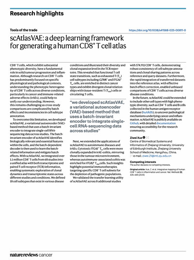
Xue, Z. (2025) Nature Reviews Cancer, 25, 319.
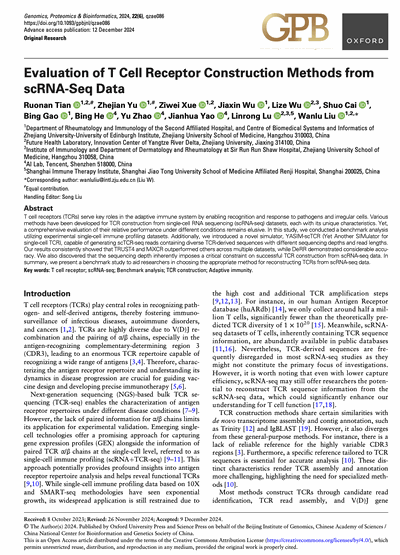
Tian, R.*, Yu, Z.*, Xue, Z., Wu, J., Wu, L., Cai, S., Gao, B., He, B., Zhao, Y., Yao, J., Lu, L., Liu, W.# (2025) Genomics, Proteomics & Bioinformatics, 22, qzae086.
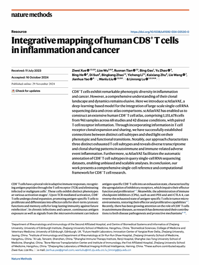
Xue, Z.*, Wu, L.*, Tian, R., Gao, B., Zhao, Y., Bing, H., Zhao, B., Li, Y., Zhu, K., Wang, L., Yao, J.#, Liu, W.# & Lu, L.# (2025) Nature Methods, 22, 435-445.
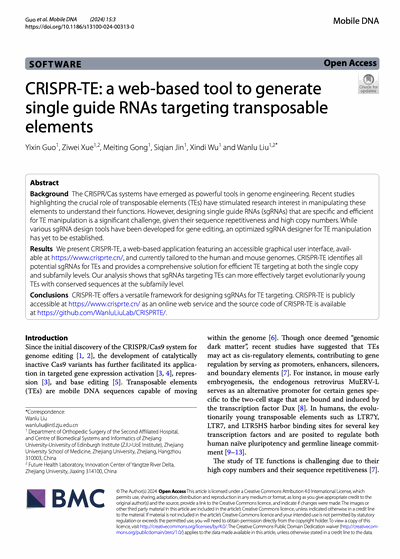
Guo, Y.*, Xue, Z., Gong, M., Jin, S., Wu, X. & Liu, W.# (2024) Mobile DNA, 15, 3.
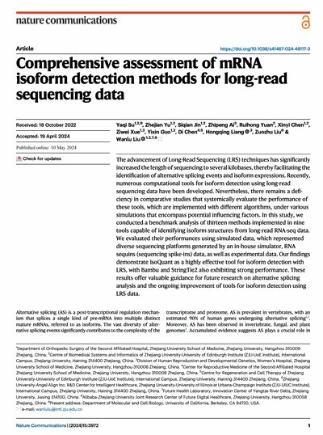
Su, Y.*, Yu, Z., Jin, S., Ai, Z., Yuan, R., Chen, X., Xue, Z., Guo, Y., Chen, D., Liang, H., Liu, Z., Liu, W. (2024) Nature Communications, 15, 3972.
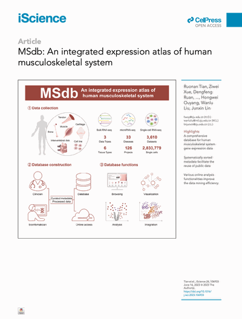
Tian, R.*, Xue, Z.*, Ruan, D., Chen, P., Xu, Y., Dai, C., Shen, W., Ouyang, H., Liu, W., and Lin, J. (2023) iScience, 26, 106933.
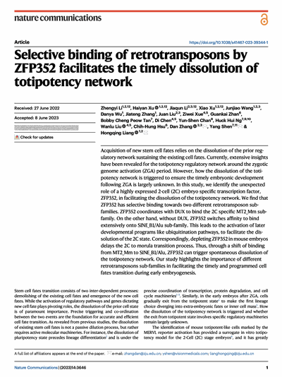
Li, Z., Xu, H., Li, J., Xu, X., Wang, J., Wu, D., Zhang, J., Liu, J., Xue, Z., Zhan, G., Tan, B.C.P., Chen, D., Chan, Y-S., Ng, H.H., Liu, W., Hsu, C-H., Zhang, D., Shen, Y. & Liang, H. (2023) Nature Communications, 14, 3646.
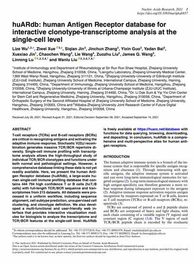
Wu, L.*, Xue, Z.*, Jin, S., Zhang, J., Bai, Y., Jin, X., Wang, C., Wang, L., Wang, J.Q., Lu, L. & Liu, W.# (2022) Nucleic Acids Research, 50(D1), D1244-D1254.
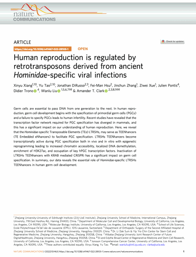
Xiang, X.*, Tao, Y., DiRusso, J., Hsu, F.-M., Zhang, J., Xue, Z., Pontis, J., Trono, D., Liu, W., and Clark, A.T. (2022) Nature Communications, 13, 463.
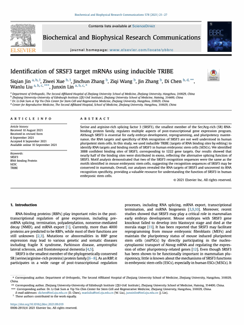
Jin, S.*, Xue, Z.*, Zhang, J., Wang, Z., Zhang, J., Chen, D.#, Liu, W.#, Lin, J.# (2021) Biochemical and Biophysical Research Communications, 578, 21-27.
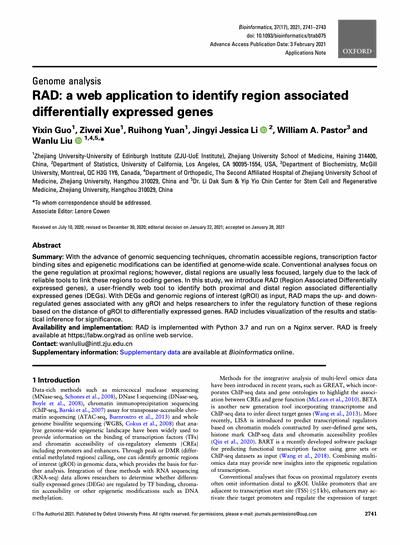
Guo, Y.*, Xue, Z., Yuan, R., Li, J., Pastor, W. & Liu, W.# (2021) Bioinformatics, 37, 2741-2743.
第十四届全国生物信息学与系统生物学学术大会，中国南宁，2025 年 10 月 7–10 日 2025 年 10 月
受邀报告：AI 驱动的单细胞免疫组学整合揭示 T 细胞表型可塑性与 TCR 多样性
美国免疫学年会（AAAI） 2025 年 5 月
墙报： 泛癌单细胞与空间转录组的统一整合
人类细胞图谱亚洲会议 2024 年 12 月
墙报： 人类 CD8+ T 细胞在炎症与癌症中的整合图谱
墙报： 跨疾病、群体水平的单细胞 TCRαβ 受体库参考图谱
浙江大学竺可桢奖学金
国家奖学金
浙江大学国际校区先锋学子
浙江大学博士生求是新星培养计划
浙江大学优秀研究生
浙江大学医学院学术墙报展
浙江大学国际校区第一届交叉创新大赛